Verein · seit 1975
Geschichte
Vier Gründer an einem Schaffhauser Gässchen, fünf Tische in einer Schulturnhalle, 15'000 Franken Budget. Fünfzig Jahre später: siebzehn Schweizer Meistertitel und eine Halle, die der Verein selbst ausgebaut hat.
13 Stationen
Die Zeitleiste folgt der Chronik von Pascal Oesch. Wo es Bilder gibt, führt ein Verweis ins Archiv weiter unten.
-
1975
Gründung
Am 20. Juni gründen Josef Mandl, Hermann Brunner, Max Muigg und Willi Borovcnik am Rosentalgässchen 15 in Schaffhausen den Verein. Trainiert wird in der Turnhalle des Schulhauses Gemeindewiesen, an höchstens fünf Tischen, mit einem Budget von 15'000 Franken.
-
1979
Die Rhyfallhalle wird eröffnet
Am 31. August beginnt der Spielbetrieb in der neuen Rhyfallhalle. Der TTC wird zum Verein mit der grössten Hallenbelegung – und die Halle für gut zwanzig Jahre seine Heimat.
4 Bilder im Archiv -
1981
Aufstieg in die Nationalliga C
Mit Martin Singer, Urs Muigg und Ueli Küng. Vier Jahre später folgt die Nationalliga B.
-
1996
Erster Meistertitel der Herren
Am 25. Februar gewinnen Giovanni Gentile, Ivan Jecic, Thierry Miller und Martin Singer den Final gegen CTT Meyrin 6:4, vor 350 Zuschauern in Schaffhausen. Das Hinspiel endete 5:5. Weitere Titel folgen 1998 und 2000.
4 Bilder im Archiv -
2001
Bau des TTZ Ebnat
In rund zwölf Monaten entsteht aus einer leeren Industriehalle das Tischtenniszentrum: 1200 Stunden Freiwilligenarbeit, 80'000 Franken Investitionen und 26'000 Franken für Material.
11 Bilder im Archiv -
2002
Einzug ins Tischtenniszentrum
Im Frühling zieht der Verein ein: 440 Quadratmeter, anfangs acht Tische, 65 Stufen bis zum Eingang.
11 Bilder im Archiv -
2004
Die Seniorengruppe
Urs Schärrer senior und Edmondo Valley gründen die Seniorengruppe. Heute spielen dort über fünfzig Aktive.
-
2005
Erster Meistertitel der Damen
Am 16. April schlagen Sonja Führer, Monika Führer, Laura Schärrer und Andrea Stepankova im Final Young Stars Zürich 7:3 – als jüngstes Meisterteam der Geschichte, trainiert von Pavel Rehorek. Es ist der erste von vierzehn Titeln.
-
2011
Der Titel nach Sätzen
Alle drei Finalspiele gegen Wädenswil enden 5:5. Entschieden wird nach Sätzen, 18:17 für Neuhausen – nach einem dritten Spiel von über zweieinhalb Stunden. Der sechste Titel der Damen.
-
2015
Abstieg der Herren
Nach vierzehn Jahren in der höchsten Spielklasse geht es in die Nationalliga B.
-
2019
Rückkehr und neuer Boden
Die Herren steigen wieder auf. Im TTZ Ebnat wird ein tischtennisspezifischer Taraflex-Belag verlegt.
-
2025
-
2026
Ja zum Hallensportzentrum
Stadt und Kanton Schaffhausen stimmen dem Ausbau des Hallensportzentrums im Schweizersbild zu, der Kanton mit 73,9 Prozent. Dort soll der Verein ein neues Zuhause finden.
Siebzehn Titel
Die Herren holten ihre drei Meistertitel in fünf Jahren. Die Damen gewannen ab 2005 vierzehn – und sind damit das erfolgreichste Damenteam der Schweiz. Nebeneinander sieht man, wie sich die Gewichte verschoben haben.
14
Damen
Seit 2005 das erfolgreichste Damenteam der Schweiz.
- 2005
- 2006
- 2007
- 2009
- 2010
- 2011
- 2012
- 2015
- 2016
- 2017
- 2018
- 2019
- 2021
- 2022
3
Herren
Drei Titel in fünf Jahren, dazu vierzehn Jahre Nationalliga A.
- 1996
- 1998
- 2000
Aus dem Vereinsarchiv
Was übrig geblieben ist
Filmstreifen, Albumblätter, ein Matchprogramm. Nichts davon ist zurechtgeschnitten – die Sprossenlöcher, die Bildnummern und die Handschrift auf den Blättern gehören dazu. Ein Klick auf ein Stück zeigt es gross.
In der Rhyfallhalle
1979 eröffnet, und für die nächsten gut zwanzig Jahre die Heimat des Vereins. Zwei Kontaktbögen und eine Aufnahme von der Bühne sind davon übrig.
{kind=link}
{kind=link}
{kind=link}
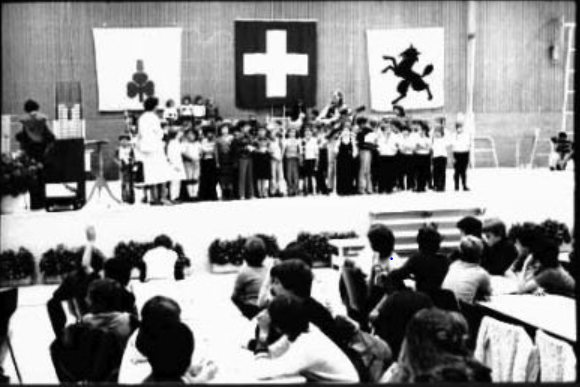
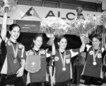
Der erste Titel
Am 25. Februar 1996 spielte der TTC Neuhausen in der Dreifachhalle Breite gegen CTT Meyrin um den Schweizer Meistertitel. Vom Tag sind drei Filmstreifen geblieben — und der Coupon, mit dem man gratis hineinkam.
{kind=link}
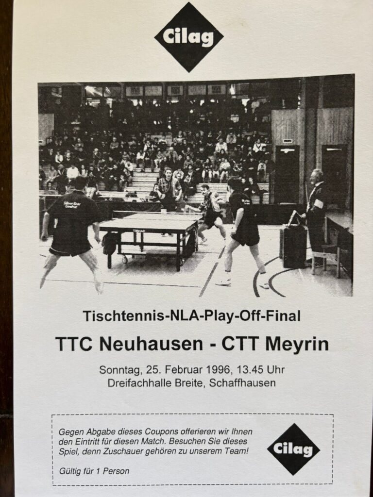
{kind=link}
{kind=link}
{kind=link}
Die Halle, die der Verein selbst ausgebaut hat
Aus einer leeren Industriehalle im Ebnat wurde in rund zwölf Monaten das Tischtenniszentrum — grösstenteils in Eigenleistung. Die Albumblätter zeigen den Weg dahin: leerer Boden, Zementpaletten, Leitern, und am Ende Tische, auf denen gespielt wird.
{kind=link}
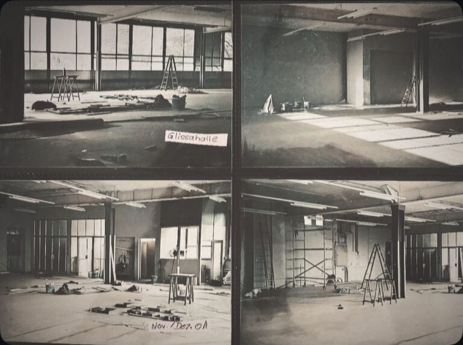
{kind=link}
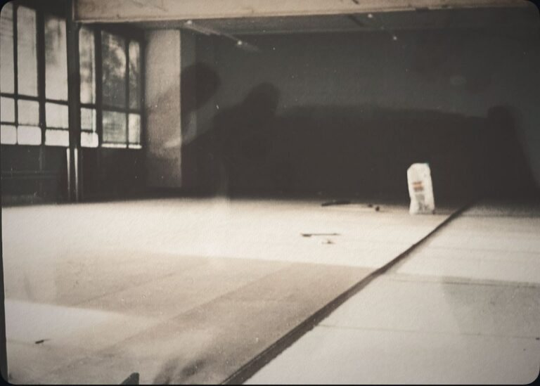
{kind=link}
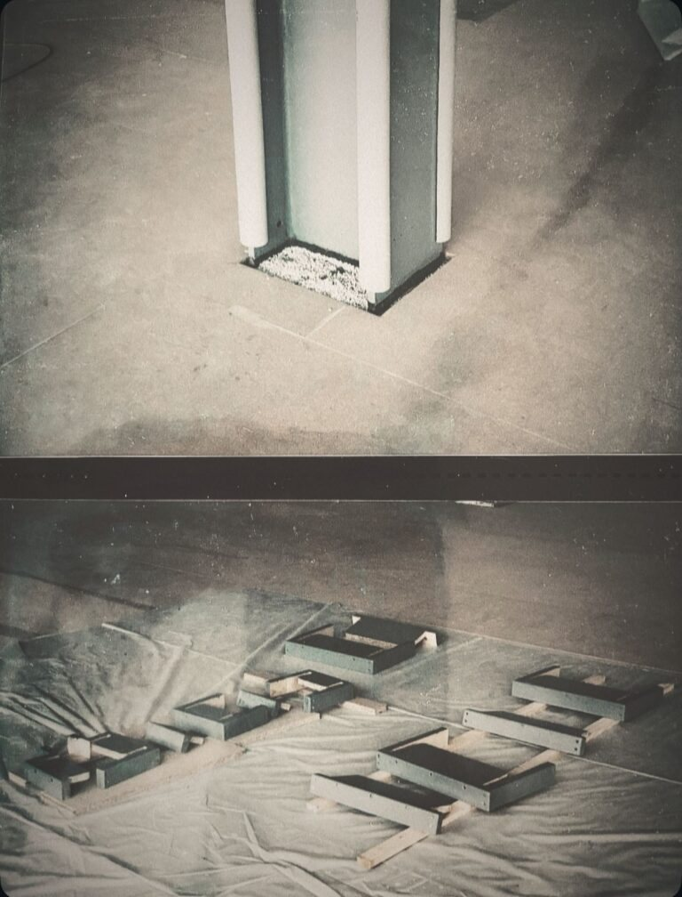
{kind=link}
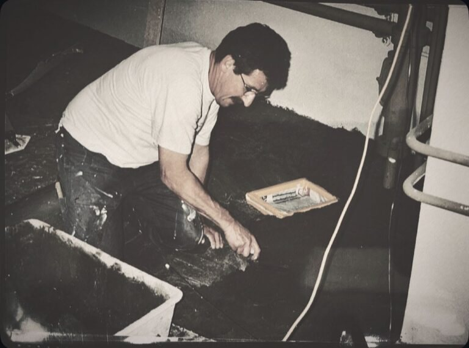
{kind=link}
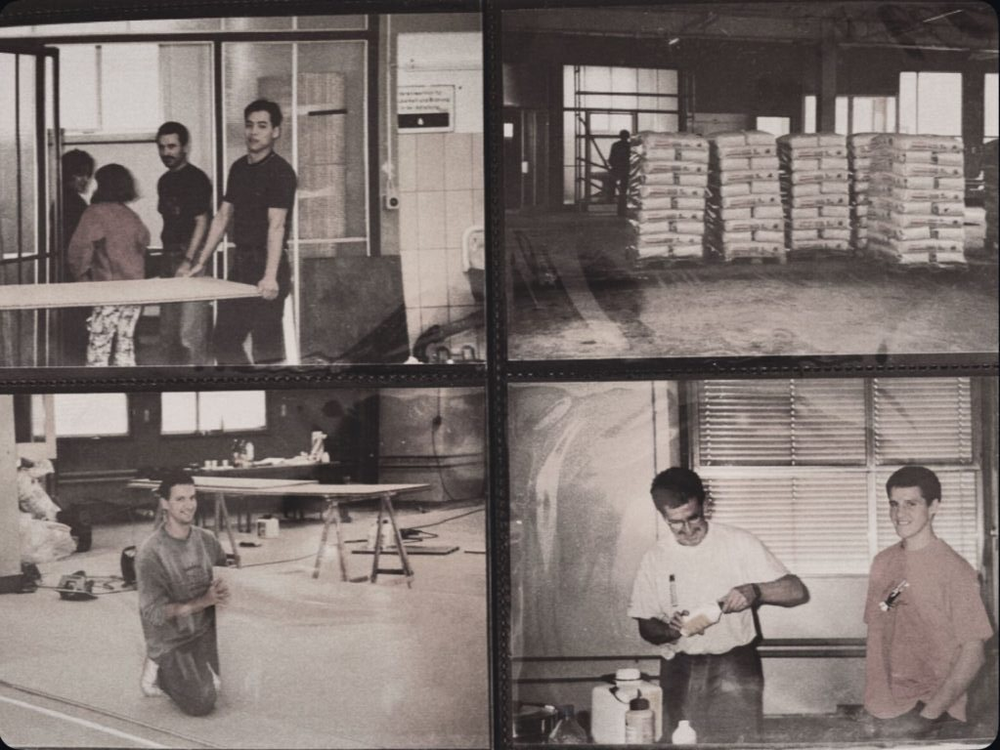
{kind=link}
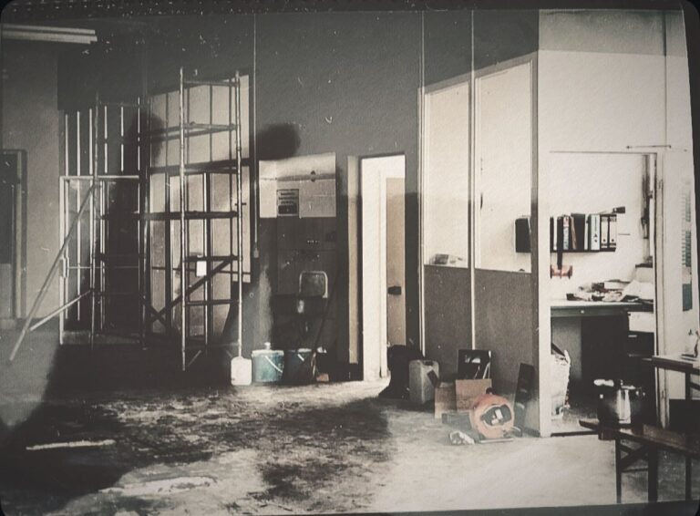
{kind=link}
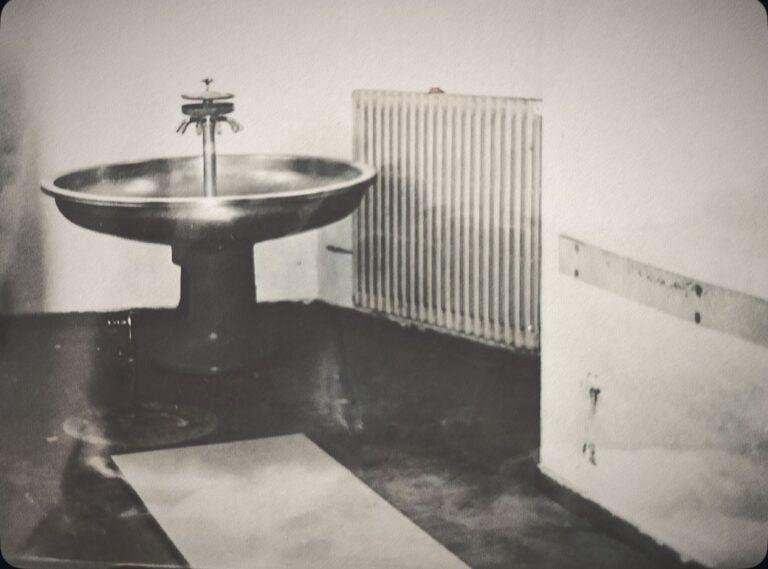
{kind=link}
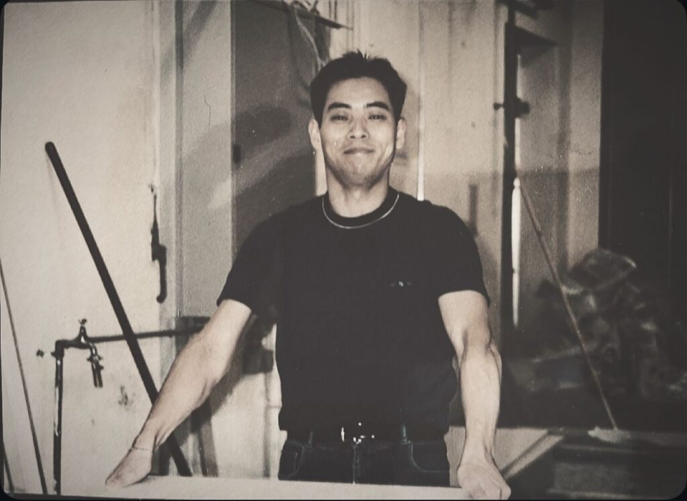
{kind=link}
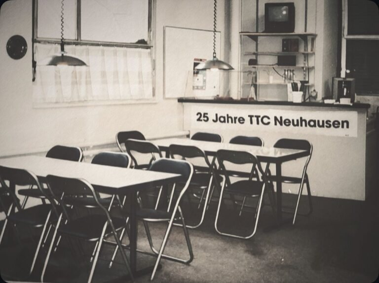
{kind=link}
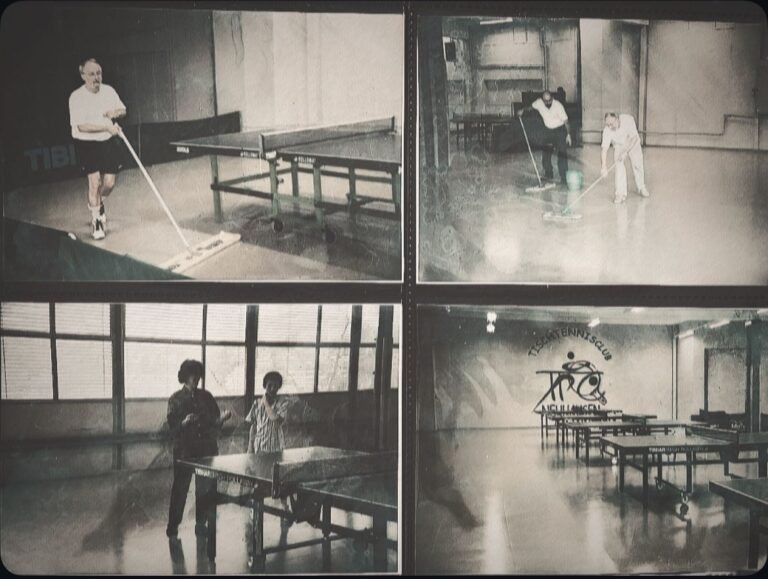
{kind=link}
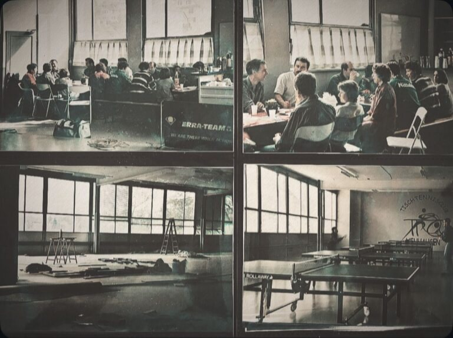
Fünfzig Jahre
Von der Gründung 1975 ist kein Bild überliefert. Vom Jubiläum fünfzig Jahre später schon.
{kind=link}
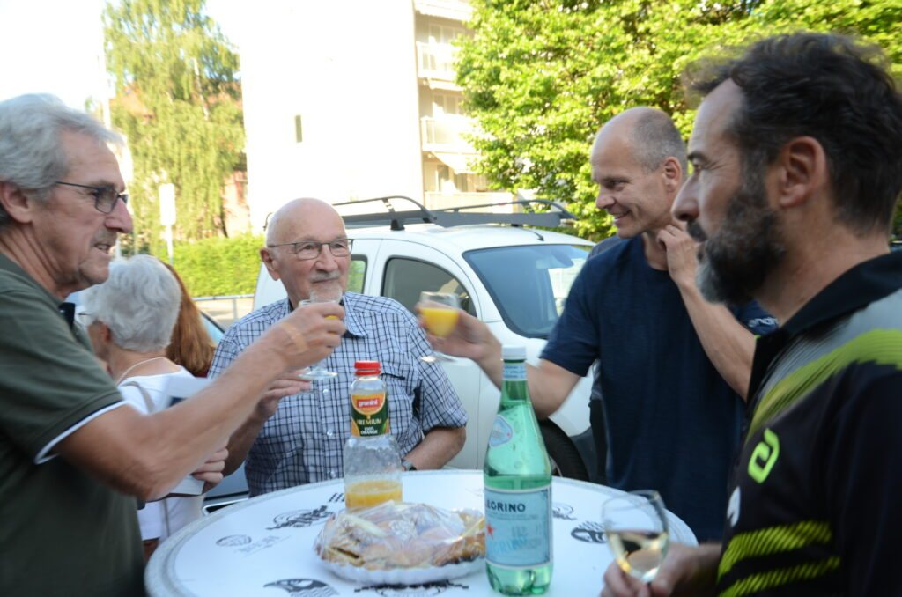
Die Archivbilder stammen aus dem Vereinsarchiv. Neuere Aufnahmen sind mit freundlicher Genehmigung von Pascal Oesch, dessen Chronik ausserdem die Grundlage dieser Zeitleiste bildet.